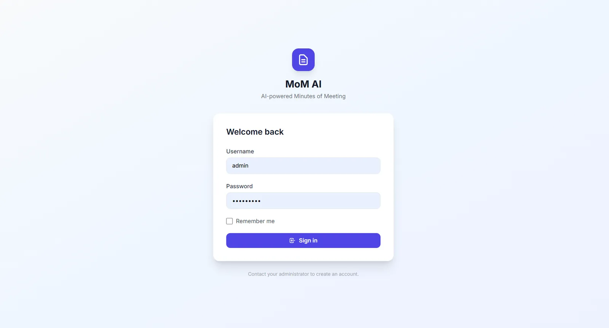
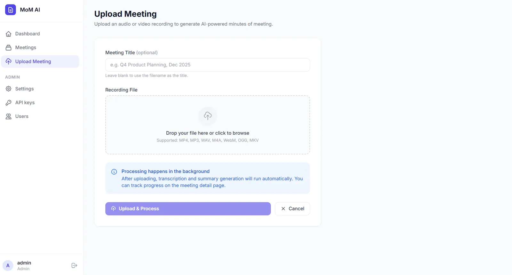
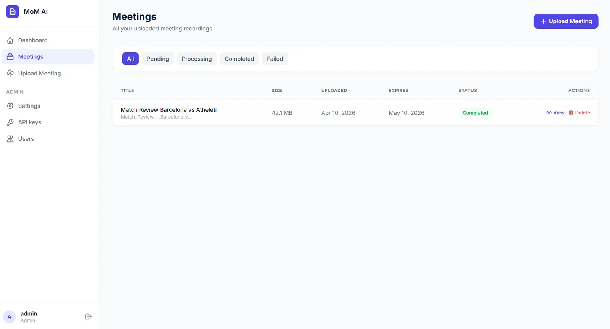
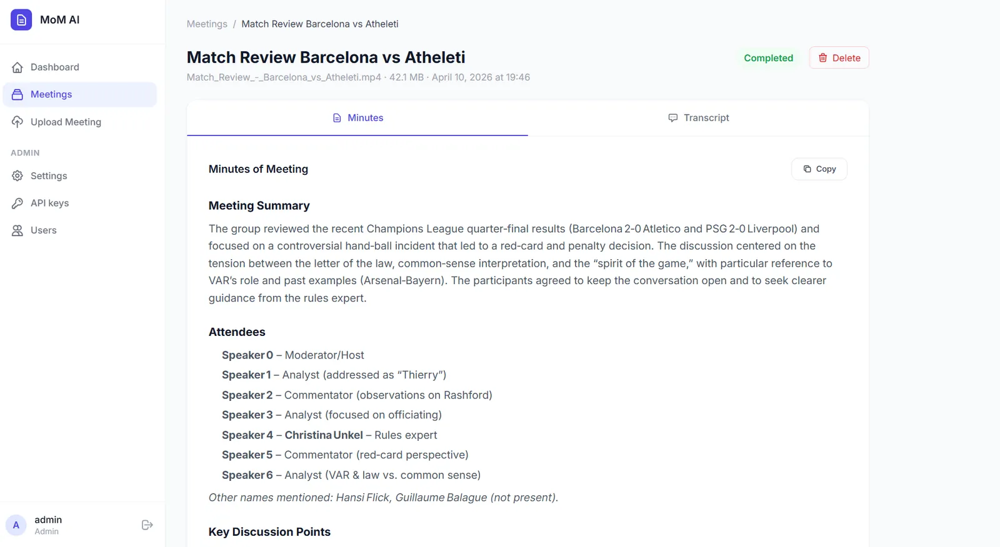

MoM AI
Project Overview
MoM AI is a web application that automates the process of turning meeting recordings into structured minutes. You upload an audio or video file, the system transcribes it using a speech provider of your choice, and then sends the transcript to an LLM to generate organized Minutes of Meeting.
Six transcription backends are supported: Deepgram, AssemblyAI, ElevenLabs Scribe and Sarvam AI over their APIs, any endpoint that speaks the OpenAI transcription format, and Whisper running on your own machine with no API key at all. Summarization works with any OpenAI-compatible chat API, which covers the hosted providers as well as Ollama, LM Studio and vLLM locally. Every one of these is picked from a dropdown at runtime.

The output includes a meeting summary, key discussion points, decisions made, action items, and next steps. Everything is presented in a clean, readable format inside the browser. The app handles the entire pipeline in the background, so you can upload a recording and come back when it is done.
Why I Built This
After attending several team meetings, I noticed that writing minutes manually was repetitive, time-consuming, and often inconsistent. Notes were scattered, key decisions got missed, and action items were forgotten.
I built this as a side project to solve that problem for myself first. It was also a good opportunity to learn how to integrate multiple AI APIs into a single pipeline, work with background task processing, and understand how different speech-to-text providers handle real-world audio.
The project is open source because I believe the pattern of combining speech-to-text with LLM summarization is useful for many developers. Sharing the full implementation felt more valuable than keeping it private.
The Problem
Writing meeting minutes manually has a few common issues:
- It takes time to re-listen to recordings and extract key points.
- Different people format notes differently, making them hard to follow.
- Important decisions and action items often get lost or left vague.
- For longer meetings, the effort needed to summarize grows quickly.
MoM AI reduces this work to a single upload. The output follows a consistent structure every time: summary, attendees, discussion points, decisions, action items, and next steps. This makes it easier to review meetings, track responsibilities, and share outcomes with the team.
Key Features
Six Transcription Backends
Deepgram, AssemblyAI, ElevenLabs, Sarvam AI, any OpenAI-compatible endpoint, or local Whisper. The first four return speaker labels
LLM Summarization
Works with any OpenAI-compatible API - OpenAI, Groq, OpenRouter, Ollama, and others
Background Processing
Celery + Redis for async processing - upload and come back when it is done
Docker-Ready Deployment
Full stack runs with a single docker compose up command
Runs Without the Cloud
Whisper locally, an LLM on Ollama, no CDN and no telemetry. The only outbound calls are the ones you configure
Any Meeting Length
Long audio is split for the transcriber; long transcripts are summarized in parts and merged, so the context window is not the ceiling
- Everything configured on screen - providers, API keys, models, the summarization prompt, retention and upload limits. There is no config file to edit and nothing to restart
- First-run setup wizard that creates the administrator account, so the app ships with no default password
- Secrets encrypted at rest using a key generated on first run and stored only on that machine
- Live job control with per-step progress, an activity log, and cancel or re-run on any meeting
- Built to be operated - liveness and readiness endpoints, Prometheus metrics, structured logs with request ids, and an admin System page showing every dependency
- Automatic file cleanup that deletes recordings after a configurable number of days while keeping transcripts and minutes
- Role-based access with admin and user roles
- Wide format support for MP3, WAV, M4A, AAC, FLAC, OGG, Opus, WMA, MP4, MKV, MOV, WebM and AVI files
How It Works
The processing flow has four clear steps:
- Upload - The user uploads a meeting recording through the web interface. The file is saved to the server and a background job is queued.
-
Audio Conversion - The Celery worker picks up the job and uses
ffmpegto convert the uploaded file into a 16 kHz mono WAV file. This standardized format works reliably across all speech providers. - Transcription - The WAV file is sent to the configured speech-to-text provider. The transcript comes back with speaker labels (e.g., Speaker 0, Speaker 1) when diarization is available.
- Summarization - The transcript is sent to the configured LLM with a structured prompt asking for a summary, discussion points, decisions, action items, and next steps. If the transcript is longer than the configured chunk size, it is summarized part by part and those notes are merged into the final minutes, so a three-hour meeting works even on a small context window. The result is stored as Markdown and sanitized when rendered.
The interface polls the backend for progress and shows each step as it happens, so a job that is going to fail says why while it is still running rather than at the end. Failed and cancelled meetings can be re-run as long as the recording is still on disk.
Screenshots
Login

Upload Page

Meetings Dashboard

Meeting Outcomes

Tech Stack
Backend
Task Queue & Storage
AI & Speech
Security & Observability
Frontend & Deployment
Core Logic: How the Code Works
This section shows the key parts of the implementation. The full source is on GitHub.
Processing Pipeline (Celery Task)
This is the main task that ties everything together. It converts the audio, transcribes it, sends the transcript to the LLM, and stores the result.
@celery.task(bind=True, name="app.tasks.process.process_meeting")
def process_meeting(self, meeting_id: int) -> dict:
meeting = db.session.get(Meeting, meeting_id)
config = settings.snapshot()
workdir = tempfile.mkdtemp(prefix="mom-")
def step(status: str, progress: int, message: str | None = None) -> None:
meeting.status = status
meeting.progress = progress
if message:
meeting.log(message)
db.session.commit()
def guard() -> None:
db.session.commit() # persists pending work and re-reads the row
if meeting.cancel_requested:
raise Cancelled()
try:
guard()
step("converting", 5, "Preparing audio")
audio = convert_to_wav(recording_path(meeting), workdir)
meeting.duration_seconds = probe_duration(audio)
guard()
provider = get_speech_provider(config)
step("transcribing", 20, f"Transcribing with {provider.label}")
transcript = (provider.transcribe(audio) or "").strip()
meeting.transcript = transcript
step("transcribing", 65, f"Transcript ready ({len(transcript.split()):,} words)")
guard()
client = get_llm_client(config)
step("summarizing", 70, f"Writing minutes with {client.model}")
meeting.minutes_of_meeting = generate_minutes(
client, transcript, config["minutes_prompt"],
int(config["transcript_chunk_chars"]), on_progress,
)
step("completed", 100, "Minutes ready")
return {"meeting_id": meeting_id, "status": "completed"}
except Cancelled:
step("cancelled", meeting.progress or 0, "Cancelled")
return {"meeting_id": meeting_id, "status": "cancelled"}
except Exception as exc:
_fail(meeting, str(exc))
return {"meeting_id": meeting_id, "status": "failed"}
finally:
shutil.rmtree(workdir, ignore_errors=True)Summarizing a Meeting of Any Length
A three-hour meeting produces a transcript far larger than most context windows. Rather than truncate it, the summarizer splits the transcript on paragraph boundaries, takes notes on each part, and then writes the final minutes from those notes. Short meetings skip all of that and go through in a single call. The prompt itself is no longer hardcoded — it is a setting, editable from the admin screen.
def generate_minutes(
client: OpenAICompatibleLLM,
transcript: str,
prompt: str,
chunk_chars: int,
on_progress: Callable[[int, int], None] | None = None,
) -> str:
chunks = split_text(transcript, chunk_chars)
if len(chunks) == 1:
return client.complete(prompt, f"Transcript:\n\n{transcript}")
notes = []
for index, chunk in enumerate(chunks, start=1):
notes.append(f"### Part {index} of {len(chunks)}\n{client.complete(PART_PROMPT, chunk)}")
if on_progress:
on_progress(index, len(chunks))
return client.complete(prompt, MERGE_HEADER + "\n\n".join(notes))Speech Provider Registry
Every backend implements the same two methods, so adding one is a matter of writing the class and putting it in the tuple. The whole selection layer is the file below. Each provider receives the settings snapshot and reads whatever it needs from it, which keeps the caller free of provider-specific branching.
PROVIDERS: dict[str, type[BaseSpeechProvider]] = {
p.name: p
for p in (
DeepgramProvider,
AssemblyAIProvider,
ElevenLabsProvider,
SarvamProvider,
OpenAICompatibleSpeechProvider,
LocalWhisperProvider,
)
}
def get_speech_provider(config: dict) -> BaseSpeechProvider:
name = (config.get("speech_provider") or "deepgram").strip().lower()
provider = PROVIDERS.get(name)
if provider is None:
raise RuntimeError(f"Unknown speech provider {name!r}.")
return provider(config)Audio Conversion
All uploaded files are normalized to 16 kHz mono WAV before being sent to any speech provider. This keeps the transcription step consistent regardless of the input format.
def convert_to_wav(input_path: str, output_dir: str, timeout: int = 7200) -> str:
"""Normalise any recording to mono 16 kHz WAV, the format every provider accepts."""
if not ffmpeg_available():
raise RuntimeError(
"ffmpeg was not found. Install it and make sure it is on PATH, "
"or run the app with Docker where it is already included."
)
os.makedirs(output_dir, exist_ok=True)
output_path = os.path.join(output_dir, "audio.wav")
result = _run(
["ffmpeg", "-y", "-hide_banner", "-loglevel", "error", "-i", input_path,
"-ar", "16000", "-ac", "1", "-vn", output_path],
timeout,
)
if result.returncode != 0 or not os.path.exists(output_path):
raise RuntimeError(f"ffmpeg could not read the recording: {_tail(result.stderr)}")
return output_pathMy Contribution
I designed and built this project end to end.
- Architected the full pipeline from file upload to final minutes output
- Built the Flask backend with blueprints, SQLAlchemy models, and Jinja2 templates
- Integrated six speech-to-text backends (Deepgram, AssemblyAI, ElevenLabs, Sarvam AI, any OpenAI-compatible endpoint, and Whisper running locally) behind a common interface
- Wrote the LLM integration layer using the OpenAI SDK, making it compatible with any OpenAI-compatible endpoint (OpenAI, Groq, OpenRouter, Ollama, and others)
- Set up Celery with Redis for background processing and periodic cleanup tasks
- Built the admin panel for managing providers, API keys, and system settings at runtime
- Moved every setting into a schema-driven admin screen with secrets encrypted at rest, and replaced the default password with a first-run setup wizard
- Added the operational layer: liveness and readiness endpoints, Prometheus metrics, structured logging with request ids, and recovery for jobs whose worker dies mid-run
- Designed the UI with a clean, responsive layout
- Dockerized the entire stack (Flask, Celery worker, Celery beat, Redis) for one-command deployment
Challenges & Learnings
Handling different speech provider APIs and output formats
Each provider returns transcripts in a different structure. Some give word-level timestamps, others give
utterances, and speaker labels vary across providers. I had to normalize these outputs into a consistent
format that the LLM could work with reliably. This taught me the importance of building a clean abstraction
layer when dealing with multiple external APIs.
Managing long-running tasks without blocking the web server
Audio files can be large, and transcription plus summarization can take minutes. I set up Celery with Redis
to handle this asynchronously. Getting the progress tracking right (so the UI could show real-time status
updates via polling) required careful state management on the database side.
Prompt engineering for consistent LLM output
Early versions of the summarization prompt produced inconsistent results. Sometimes the LLM would skip
sections, use different headings, or add unnecessary commentary. Iterating on the system prompt to get a
reliable, structured output taught me that small wording changes in prompts can significantly affect the
quality and consistency of the result.
Audio format normalization across different input types
Users upload files in all sorts of formats (MP4, WebM, M4A, OGG). Not all speech providers handle all
formats well. Converting everything to a standardized 16 kHz mono WAV using ffmpeg before transcription
solved compatibility issues across all providers.
Two different ceilings on meeting length
A long recording runs into two unrelated limits, and I initially conflated them. The transcription APIs cap
the upload size, which is a bytes problem solved by splitting the audio with ffmpeg and joining the results.
The LLM caps the context window, which is a tokens problem and needs the transcript summarized in parts and
merged. Separating them meant each fix landed in exactly one place, and only the provider that actually has
an upload limit pays the cost of chunking.
Installation & Setup
# Clone the repository
git clone https://github.com/inboxpraveen/LLM-Minutes-of-Meeting.git
cd LLM-Minutes-of-Meeting
# Start the full stack (Flask, Celery worker, Celery beat, Redis)
docker compose up --build
# Or include Whisper in the image to transcribe with no API key at all
WITH_LOCAL_WHISPER=true docker compose up --build
No .env file and no API keys are needed to start. Open http://localhost:5000, and the
first screen asks you to create the administrator account. From there, Settings is where you pick a speech
provider and an LLM endpoint, with a Test button on each to confirm the credentials work before you upload
anything.
Future Improvements
- Real-time meeting transcription by integrating with a live audio stream instead of only uploaded files
- Speaker diarization for local Whisper, so the no-API-key path gets speaker labels too
- Email or Slack integration to automatically send the generated minutes to meeting participants
- A true side-by-side view, so a claim in the minutes can be checked against the transcript line that produced it
- PDF and DOCX export to sit alongside the existing Markdown and plain text downloads
- Meeting analytics to track trends like frequently discussed topics and recurring action items
Closing Note
MoM AI is open source and built to be useful. Whether you want to automate your own meeting notes, learn how to integrate speech-to-text and LLM APIs, or just explore the codebase for ideas, you are welcome to use, fork, or improve it.
If you find it helpful or have suggestions, feel free to open an issue or contribute on GitHub.